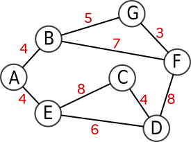
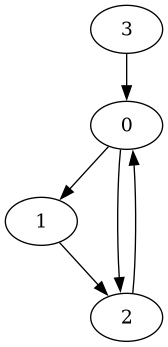
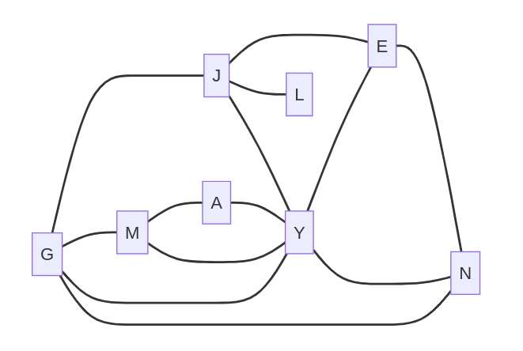
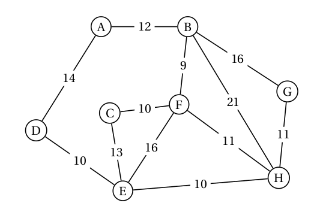

Exercices
Exercice 1
Exercice 3 du sujet 0 version A - 2024
Correction Q1.

Correction Q2.
Le chemin le plus court est A-E-D (10 km).
Correction Q3.
La matrice d'adjacence de G1 est : \(\pmatrix{ 0 & 4 & 0 & 0 & 4 & 0 & 0 \\ 4 & 0 & 0 & 0 & 0 & 7 & 5 \\ 0 & 0 & 0 & 4 & 8 & 0 & 0 \\ 0 & 0 & 4 & 0 & 6 & 8 & 0 \\ 4 & 0 & 8 & 6 & 0 & 0 & 0 \\ 0 & 7 & 0 & 8 & 0 & 0 & 3 \\ 0 & 5 & 0 & 0 & 0 & 3 & 0 \\ }\)
Correction Q4.
1 2 3 4 5 6 7 8 9 10 | |
Correction Q5.
Le parcours en largeur de ce graphe donne A-B-C-H-I-D-E-G-F.
Correction Q6.
La fonction cherche_itineraires s'appelle elle-même, elle est donc récursive.
Correction Q7.
La fonction cherche_itineraires sert à remplir la liste tab_itineraires (initialement vide) avec tous les chemins (uniques) partant de start et allant à end.
Code pour tester la Q8.
1 2 3 4 5 6 7 8 9 10 11 12 13 14 15 16 17 18 19 20 21 22 23 24 25 26 27 28 29 30 31 32 33 34 35 | |
Correction Q8.
1 2 3 4 5 6 7 8 9 10 11 12 13 14 15 16 17 18 19 20 21 22 23 24 25 26 27 28 29 30 31 32 33 34 35 | |
Correction Q9.
Le problème vient de la variable globale tab_itineraires.
- Après l'exécution de la commande
itineraires_court(G2, 'A', 'E'),tab_itinerairescontient tous les chemins de A à E. - Si le programme n'est pas re-exécuté, l'enchainement avec la commande
itineraires_court(G2, 'A', 'F')va venir rajouter à la listetab_itinerairestous les chemins de A à F. - Lors de la recherche du trajet minimum, les trajets testés seront donc à la fois les trajets de A à F mais aussi de A à E : on peut donc potentiellement avoir une réponse erronnée.
Pour éviter cela, on pourrait faire ceci (non demandé) :
1 2 3 4 5 6 7 8 9 10 11 12 13 14 15 16 17 18 19 20 21 22 23 24 25 26 27 | |
Exercice 2
extrait de la BNS 2024
On considère dans cet exercice un graphe orienté représenté sous forme de listes d’adjacence.
On suppose que les sommets sont numérotés de 0 à n-1.
Par exemple, le graphe suivant :

est représenté par la liste d’adjacence suivante :
adj = [[1, 2], [2], [0], [0]]
Écrire une fonction voisins_entrants(adj, x) qui prend en paramètre le graphe
donné sous forme de liste d’adjacence et qui renvoie une liste contenant les voisins entrants
du sommet x, c’est-à-dire les sommets y tels qu’il existe une arête de y vers x.
Exemples :
>>> voisins_entrants([[1, 2], [2], [0], [0]], 0)
[2, 3]
>>> voisins_entrants([[1, 2], [2], [0], [0]], 1)
[0]
Correction
1 2 3 4 5 6 | |
Exercice 3
Dans cet exercice, on considère un graphe non orienté représenté sous forme de listes d’adjacence. On suppose que les sommets sont numérotés de 0 à n-1.
Ainsi, le graphe suivant:

sera représenté par la liste d’adjacence suivante:
adj = [[1, 2], [0, 3], [0], [1], [5], [4]]
On souhaite déterminer les sommets accessibles depuis un sommet donné dans le graphe. Pour cela, on va procéder à un parcours en profondeur du graphe.
Compléter la fonction suivante.
1 2 3 4 5 6 7 8 9 10 11 12 13 14 15 16 17 | |
Exemples :
>>> accessibles([[1, 2], [0], [0, 3], [1], [5], [4]], 0)
[0, 1, 2, 3]
>>> accessibles([[1, 2], [0], [0, 3], [1], [5], [4]], 4)
[4, 5]
Correction
1 2 3 4 5 6 7 8 9 10 11 12 13 14 15 16 17 18 19 | |
Exercice 4
Exercice 2 du sujet Concours GEIPI 2024.
Codes du sujet :
1 2 3 4 5 6 7 8 9 10 11 12 13 14 15 16 17 18 19 20 21 22 23 24 25 26 27 28 29 30 31 32 33 34 35 36 37 38 39 40 41 42 43 44 45 46 47 48 49 50 51 52 53 54 55 56 57 58 59 | |
Correction Q1.
1 2 3 4 5 6 7 8 9 10 | |
Correction Q2.
1 2 3 4 5 6 7 8 | |
Correction Q3.
1 2 3 4 5 6 7 8 9 10 11 12 13 14 15 16 17 18 19 20 | |
Correction Q4.
1 2 3 4 5 6 7 8 9 10 11 12 | |
Exercice 5
Exercice 2 du sujet Amérique du Nord J1 2024
Correction Q1.

Correction Q2.
# G, J, Y, E, N, M, A, L
matrice_adj = [ [0, 1, 1, 0, 1, 1, 0, 0], #G
[1, 0, 1, 1, 0, 0, 0, 1], #J
[1, 1, 0, 1, 1, 1, 1, 0], #Y
[0, 1, 1, 0, 1, 0, 0, 0], #E
[1, 0, 1, 1, 0, 0, 0, 0], #N
[1, 0, 1, 0, 0, 0, 1, 0], #M
[0, 0, 1, 0, 0, 1, 0, 0], #A
[0, 1, 0, 0, 0, 0, 0, 0]] #L
Correction Q3.
position(sommets, 'G')renvoie 0position(sommets, 'Z')renvoieNone
Correction Q4.
1 2 3 4 5 6 7 8 | |
Correction Q5.
nb_amis(sommets, matrice_adj, 'G') renvoie 4.
Correction Q6.
creprésente la clé.vreprésente la valeur associée à cette clé.
Correction Q7.
graphe = {
'G' : ['J', 'Y', 'N', 'M'],
'J': ['G', 'Y', 'E', 'L'],
'Y': ['G', 'J', 'E', 'N', 'M', 'A'],
'E': ['J', 'Y', 'N'],
'N': ['G', 'Y', 'E'],
'M': ['G', 'Y', 'A'],
'A': ['Y', 'M'],
'L': ['J']
}
Correction Q8.
def nb_amis(d, s):
return len(d[s])
Correction Q9.
Le cercle d'amis de Lou est L J G Y E N.
 Erreur d'énoncé sur la question 10.
Erreur d'énoncé sur la question 10.
Le code à compléter est celui-ci :
1 2 3 4 5 6 7 | |
Correction Q10.
1 2 3 4 5 6 7 | |
Exercice 6 : l'algorithme de Dijkstra
L'algorithme de Dijkstra est un algorithme de recherche de plus court chemin dans un graphe, découvert en 1959 par le mathématicien et informaticien néerlandais Edsger Dijkstra.
Cet algorithme (plus exactement son optimisation A* que nous n'aborderons pas ici) est l'algorithme utilisé couramment par toutes les interfaces de recherche d'itinéraires (GPS des voitures, Itinéraires dans GoogleMaps, etc.)
Nous allons observer son fonctionnement sur un graphe en exemple, puis le programmer.

0. Fonctionnement⚓︎
1. Préambule⚓︎
À chaque étape il faut choisir le sommet qui est associé à la distance la plus petite. Nous allons pour cela devoir ordonner une liste par son deuxième élément.
Par exemple, vous voulons transformer la liste
[["A", 3], ["B", 2], ["C", 8], ["D", 1]]
en
[["D", 1], ["B", 2], ["A", 3], ["C", 8]]
Il faut pour cela procéder en 2 étapes.
 Créer une fonction
Créer une fonction deuxieme qui prend en paramètre un tableau lst de type List et qui renvoie le deuxième élément de lst.
Exemple d'utilisation
>>> simpsons = ['Bart', 'Lisa', 'Maggie']
>>> deuxieme(simpsons)
'Lisa'
Correction
def deuxieme(lst) :
return lst[1]
Grâce à cette fonction deuxieme, nous allons utiliser la fonction sorted, qui prend en paramètre une liste à trier et une fonction de tri.
Exemple :
>>> mylist = [["A", 3], ["B", 2], ["C", 8]]
>>> mynewlist = sorted(mylist, key=deuxieme)
>>> mynewlist
[['B', 2], ['A', 3], ['C', 8]]
les fonctions lambda
Python permet en fait de faire cela de manière beaucoup plus rapide, avec les fonctions lambda, qui sont comme des fonctions créées à la volée sans avoir besoin de les nommer :
>>> mylist = [["A", 3], ["B", 2], ["C", 8]]
>>> mynewlist = sorted(mylist, key=lambda x:x[1])
>>> mynewlist
[['B', 2], ['A', 3], ['C', 8]]
2. Algorithme de Dijkstra⚓︎
1 2 3 4 5 6 7 8 9 10 11 12 13 14 15 16 17 18 19 20 21 22 23 24 25 26 27 28 29 30 31 32 33 34 35 36 37 38 39 40 41 | |
- On classe la file de sorte que le 1er élément soit le sommet ayant la plus petite distance.
- On sort de la liste ce premier élément, et on récupère le nom du sommet et sa distance associée.
- Les voisins du sommet
actuelsont les clés du dictionnaire associé au sommetactuel. - La nouvelle distance (potentielle) est la somme de la distance actuelle et de la distance entre
actueletvoisin. - On met à jour la distance.
- On met à jour le parent.
- On remet dans la file le sommet
voisinainsi que sa nouvelle distance associée.
Correction
1 2 3 4 5 6 7 8 9 10 11 12 13 14 15 16 17 18 19 20 21 22 23 24 25 26 27 28 29 30 31 32 33 34 35 36 37 38 39 40 41 | |